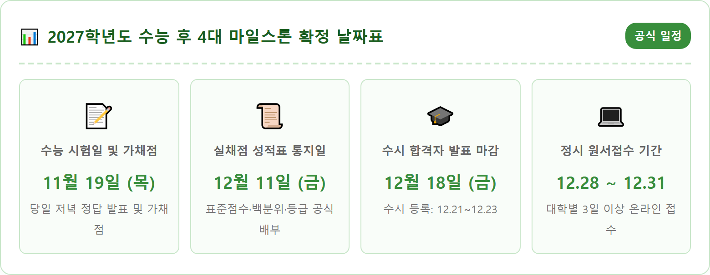
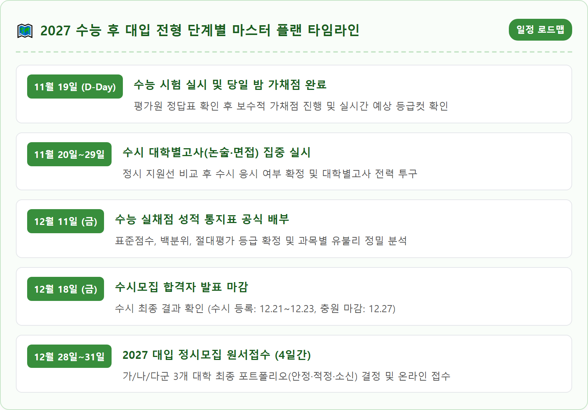
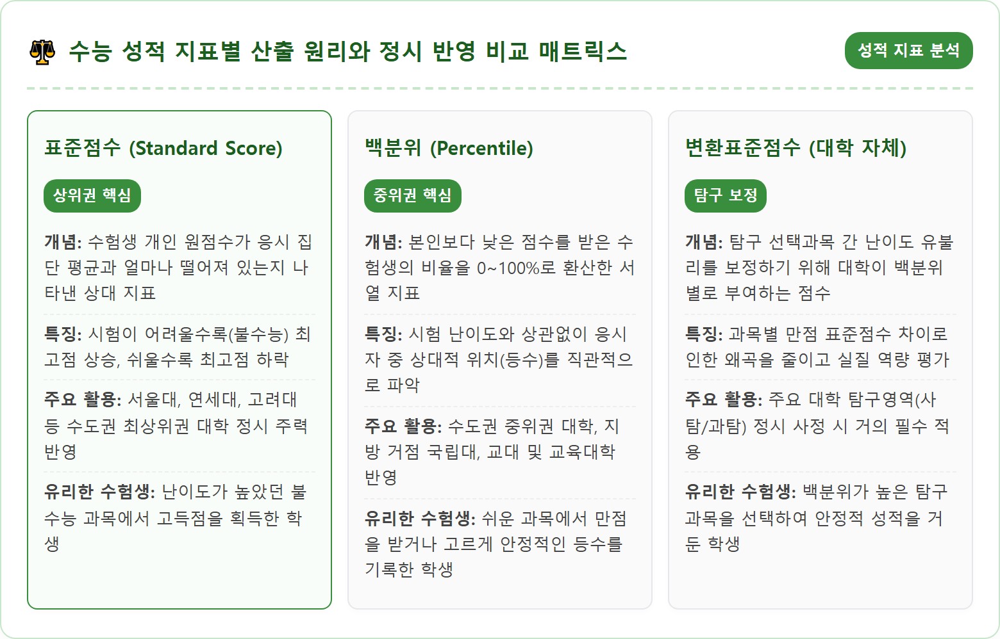
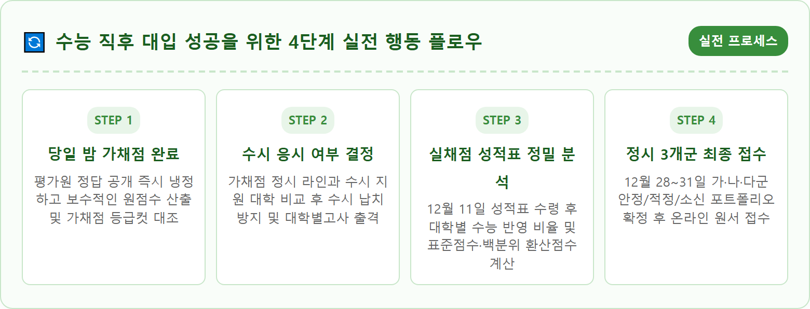
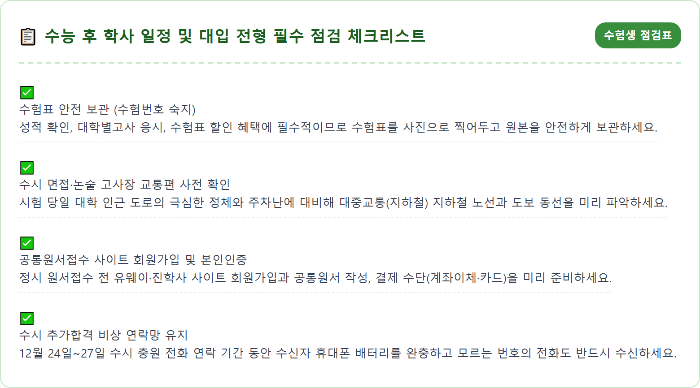
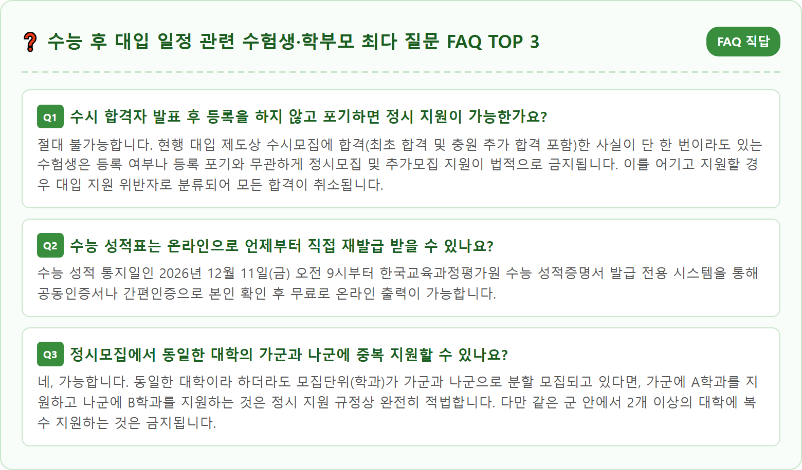

A determined high school student sitting at a clean study desk in a warm evening room, reviewing their Korean College Scholastic Ability Test (CSAT) answer sheet with an organized monthly calendar and college admissions planner in front of them. The calendar highlights key dates in November and December clearly. Warm desk lamp light creates a hopeful, focused, and calm atmosphere. Modern study room background with neatly organized textbooks and a laptop showing admission portals. Photorealistic, 8k resolution, crisp details, natural indoor lighting, cinematic composition.

2026년 11월 19일 목요일, 오랜 시간 온 힘을 쏟아온 2027학년도 대학수학능력시험의 종료 벨이 울리고 나면 수험생들은 엄청난 해방감과 함께 극도의 긴장감이 교차하는 순간을 맞이합니다. 하지만 수능이 끝났다고 해서 대입 레이스가 완전히 종료된 것은 아닙니다. 시험 당일 저녁부터 24시간 이내에 무엇을 어떻게 대처하느냐에 따라 지난 수년간의 노력이 맺는 결실의 크기가 완전히 달라질 수 있습니다.
수능 당일 저녁 귀가 후 가장 먼저 해야 할 최우선 과제는 바로 냉정하고 정확한 '가채점'입니다. 한국교육과정평가원은 매 교시가 끝난 후 정답을 순차적으로 공개하며, 5교시 제2외국어/한문 시험이 종료되는 오후 5시 45분 이후에는 전 영역의 공식 정답표가 모두 발표됩니다. 수험생은 수능 시험장에서 수험표 뒷면에 적어온 본인의 답안을 바탕으로 신속하고 오차 없이 채점을 완료해야 합니다.
가채점을 진행할 때는 애매하게 기억나는 문항을 두고 희망 섞인 추측으로 맞았다고 처리하는 오류를 철저히 경계해야 합니다. 불확실한 문항은 반드시 틀린 것으로 보수적으로 계산해야 이후 수시 대학별고사 응시 여부나 정시 지원 라인을 잡을 때 뼈아픈 오판을 방지할 수 있습니다. 주요 입시 기관의 온라인 풀서비스를 활용해 본인의 원점수를 입력하고, 실시간으로 추정되는 등급컷과 백분위 범위를 확인하는 것이 첫날의 핵심 임무입니다.
가채점이 끝나자마자 수험생이 내려야 할 가장 중대하고 긴급한 의사결정은 바로 '이번 주말부터 시작되는 수시 대학별고사(논술고사, 구술면접)에 응시하러 갈 것인가, 아니면 포기할 것인가'입니다. 수능 바로 다음 날인 금요일부터 수능 직후 첫 주말(11월 21일~22일)과 둘째 주말(11월 28일~29일)에 주요 수도권 대학들의 수시 논술 및 면접 일정이 집중적으로 몰려있기 때문입니다.
판단의 절대 기준은 가채점 원점수를 바탕으로 예측한 '정시 지원 가능 대학선'입니다. 만약 가채점 결과 정시모집에서 수시 지원 대학보다 더 상위권 대학에 안정적으로 합격할 수 있는 점수가 나왔다면, 이미 지원해 둔 수시 대학의 대학별고사에 절대로 응시해서는 안 됩니다. 우리나라 입시제도에서는 수시모집에 단 한 군데라도 최초 합격하거나 추가 합격하게 되면, 수험생의 의사와 상관없이 정시모집 지원 자격 자체가 원천 박탈되는 이른바 '수시 납치'가 발생하기 때문입니다.
반대로 가채점 결과가 평소 모의고사보다 낮게 나와 정시로 지원 가능한 대학이 수시 지원 대학에 미치지 못하거나 비슷한 수준이라면, 일말의 망설임도 없이 수시 대학별고사에 '올인'해야 합니다. 이때는 지원 대학의 수능 최저학력기준 충족 여부를 가채점 등급컷을 통해 확인한 후, 최저 기준을 맞춘 대학을 우선순위로 삼아 기출문제 분석과 실전 답안 작성 연습에 총력을 기울여야 합니다.

수능 시험이 끝난 직후 한국교육과정평가원은 출제 오류를 방지하고 공정성을 기하기 위해 공식적인 '문제 및 정답 이의신청' 절차를 가동합니다. 2027학년도 수능의 이의신청 접수 기간은 시험 당일인 11월 19일(목)부터 11월 23일(월) 오후 6시까지 총 5일간 평가원 공식 홈페이지 전용 게시판을 통해 진행됩니다.
접수된 이의신청 문항들은 해당 영역 출제진과 외부 전문 학회 소속 석학들이 참여하는 중립적인 실무심사위원회와 이의심사위원회의 정밀 검토를 거치게 됩니다. 평가원은 학술적 타당성과 오류 유무를 철저하게 검증한 뒤, 11월 24일(화) 오후 5시에 최종 확정된 정답을 공식 확정 발표합니다.
간혹 출제 오류가 인정되어 복수 정답이나 전원 정답(모두 정답) 처리가 이루어지는 경우가 발생할 수 있습니다. 특정 문항의 정답 처리가 번복될 경우 해당 영역의 평균 점수와 등급 구분 점수(등급컷)에 미세한 변동이 발생할 수 있으므로, 논란이 되는 킬러 문항이나 이의신청 집중 문항이 본인의 가채점 결과와 연관되어 있다면 11월 24일 최종 정답 확정 공고를 반드시 재확인해야 합니다.
가채점 점수를 바탕으로 약 3주간의 숨 고르기를 거치고 나면, 2026년 12월 11일 금요일에 비로소 전국 수험생들에게 '2027학년도 수능 성적 통지표'가 일제히 배부됩니다. 고3 재학생은 재학 중인 고등학교에서 교부받으며, 졸업생(N수생)과 검정고시 응시자는 수능 원서를 접수한 출신 모교나 시험지구 교육지원청, 또는 평가원 수능 성적증명서 발급 홈페이지를 통해 온라인으로 본인 인증 후 출력할 수 있습니다.
실제 성적표를 받아 들었을 때 가장 주의해야 할 점은 성적표에 '원점수'는 단 1점도 표기되지 않는다는 사실입니다. 성적 통지표에는 영역별 **'표준점수'**, **'백분위'**, **'등급'** 세 가지 지표만 명시됩니다. 국어와 수학의 경우 시험이 어렵게 출제될수록 최고 표준점수가 높게 형성되며, 탐구 영역은 선택 과목 간 난이도 격차를 보정하기 위해 표준점수와 백분위가 핵심 기준이 됩니다.
정시모집에서 주요 상위권 대학들은 국어와 수학은 성적표상의 표준점수를 그대로 반영하고, 탐구 영역은 수능 성적표의 백분위를 기준으로 각 대학이 자체 산출하는 '변환표준점수'를 적용하는 경우가 대부분입니다. 반면 중하위권 대학이나 지방 국공립·사립대의 경우 백분위를 단순 합산하여 반영하는 곳이 많습니다. 따라서 본인의 실채점 성적이 표준점수 반영 시 유리한지, 백분위 반영 시 유리한지를 철저히 비교 분석해야 합니다.

수능 성적표가 배부된 후 1주일 뒤인 2026년 12월 18일 금요일까지는 전국 모든 대학의 2027학년도 수시모집 최초 합격자 발표가 일제히 마감됩니다. 수험생들은 각 대학 입학처 홈페이지에 접속하여 본인의 수시 전형 합격 여부를 철저하게 확인해야 합니다. 최초 합격자로 선발된 수험생은 12월 21일(월)부터 12월 23일(수)까지 지정된 가상계좌로 예치금을 납부하거나 문서 등록을 마쳐야 최종 등록이 완료됩니다.
만약 최초 합격자 명단에 들지 못하고 '예비 번호'를 받았다면, 12월 24일(목)부터 12월 27일(일)까지 진행되는 '수시 미등록 충원(추가 합격)' 일정에 온 신경을 집중해야 합니다. 상위권 대학으로 연쇄 이동하는 복수 합격자들로 인해 예비 순번이 빠르게 돌아가기 때문입니다.
특히 충원 마감일인 12월 27일 저녁에는 전화(유선 통보)로 추가 합격 의사를 묻는 개별 연락이 이루어집니다. 이때 원서접수 당시 기재한 본인 및 부모님의 연락처로 걸려 오는 전화를 받지 못하면 등록 의사가 없는 것으로 간주되어 다음 순번으로 기회가 넘어가므로, 통신 상태를 철저히 확인하고 대기해야 합니다. 수시 충원 합격 역시 통보를 받는 순간 정시 지원이 금지되므로 신중하게 등록 여부를 결정해야 합니다.
수시모집의 모든 등록과 충원이 종료되면, 드디어 2027학년도 대입의 마지막 승부처인 '정시모집 원서접수'가 시작됩니다. 정시 원서접수 기간은 2026년 12월 28일 월요일부터 12월 31일 목요일까지 4일간 진행되며, 전국의 모든 4년제 대학은 이 기간 중 대학별로 3일 이상의 접수 기간을 설정하여 온라인으로 원서를 접수합니다.
정시모집의 대원칙은 4년제 일반대학 기준 **가군, 나군, 다군 각 1개씩 총 3장의 원서**만 지원할 수 있다는 점입니다. (단, 산업대, 카이스트, 지스트, 디지스트, 유니스트, 켄텍 등 특별법에 의해 설립된 과학기술원 및 특수목적대는 군외 지원이 가능하여 추가 지원할 수 있습니다.) 정시 3장의 카드를 배분할 때는 일반적으로 **'1안정(합격 확실) + 1적정(합격 유력) + 1소신(상향 도전)'**의 균형 잡힌 포트폴리오를 구성하는 것이 정석입니다.
가군과 나군에는 서울 주요 상위권 대학들이 대부분 포진해 있어 실질적인 주력 카드가 되며, 다군은 선발 대학 수와 모집 인원이 상대적으로 적어 경쟁률과 충원율이 폭발적으로 치솟는 특성이 있습니다. 유웨이어플라이나 진학사어플라이 등 공통원서접수 사이트에서 사전 회원가입과 공통원서 작성을 미리 마쳐두고, 마감 당일 서버 폭주나 결제 오류를 방지하기 위해 마감 시간 2~3시간 전에는 최종 결제를 완료하는 것이 안전합니다.

정시모집 지원 전략을 세울 때 수험생들이 가장 흔히 저지르는 치명적인 실수는 단순히 입시 기관이 발표하는 '단순 표준점수 합'이나 '단순 백분위 합'만 보고 대학 지원선을 결정하는 것입니다. 실제 정시모집에서는 대학마다 국어, 수학, 영어, 탐구 영역의 '반영 비율'이 천차만별이며, 동일한 총점을 가진 수험생이라도 어느 영역에서 고득점을 받았느냐에 따라 대학별 유불리가 극명하게 갈립니다.
예를 들어 자연계열 상위권 대학은 수학과 과학탐구의 반영 비율이 60~70% 이상을 차지하는 반면, 인문계열 일부 대학은 국어와 영어의 비중을 높게 반영합니다. 또한 영어 영역의 경우 등급별 감점 방식을 취하는 대학(서울대, 고려대 등)과 등급별 가산점 또는 자체 환산점수를 적용하는 대학(연세대 등) 간에 실질적인 영향력 차이가 매우 큽니다.
따라서 수험생은 12월 하순 각 대학 입학처 홈페이지에 최종 공지되는 '정시 모집요강'과 입시 포털의 모의지원 프로그램을 통해 본인의 성적을 목표 대학의 고유 환산 공식에 대입한 '대학별 환산점수(대학식 점수)'를 반드시 산출해야 합니다. 자신의 점수가 가장 높게 평가되는 전형 방식을 가진 대학을 찾아내는 것이 정시 합격 확률을 극대화하는 가장 강력한 무기입니다.

가채점과 수시 논술·면접 등 긴박한 대입 일정을 소화하는 중에도, 지난 1년간 극도의 긴장감 속에서 달려온 수험생들의 지친 심신을 보듬고 회복하는 휴식의 시간을 반드시 가져야 합니다. 수능이 끝난 직후부터 연말까지 전국 각지에서는 수험생들을 응원하기 위해 파격적인 '수험표 할인 프로모션'이 풍성하게 펼쳐집니다.
롯데월드, 에버랜드 등 주요 테마파크는 수험표 지참 시 자유이용권을 최대 50~60% 할인해 주며, CGV, 롯데시네마, 메가박스 등 영화관에서도 관람료 할인 및 팝콘 무료 증정 이벤트를 진행합니다. 항공사, 코레일, 호텔 리조트, 뷰티 헤어숍, 외식 패밀리 레스토랑 등에서도 수험생 본인 및 동반 가족을 위한 다채로운 할인 혜택을 제공하므로 수험표를 훼손하지 않고 챙겨 다니며 알뜰하게 문화생활을 즐길 수 있습니다.
무엇보다 중요한 것은 결과에 대한 지나친 자책이나 불안감을 내려놓는 건강한 멘탈 관리입니다. 시험 결과가 기대에 미치지 못하더라도 인생의 전체 여정에서 수능은 지나가는 하나의 관문에 불과합니다. 충분한 수면을 취하고, 미루어두었던 취미 생활을 즐기며, 가족 및 친구들과 따뜻한 시간을 보내면서 다가올 정시 원서접수와 대학 생활을 향한 새로운 긍정 에너지를 충전하시기 바랍니다.

2027학년도 수능이 끝난 직후부터 12월 말 정시 원서접수 마감까지의 약 40일은 입시의 마지막 향방을 결정짓는 가장 치열한 정보전이자 전략의 시간입니다. 시험이 끝났다는 일시적인 해방감에 젖어 입시 일정을 놓치거나 안일하게 대처해서는 안 되며, 달력에 주요 날짜를 명확하게 표기해 두고 단계별로 침착하게 대응해야 합니다.
가채점 분석을 통한 빠른 수시 응시 결정, 12월 11일 실채점 성적표 수령 후 정밀한 대학별 환산점수 산출, 그리고 12월 28일부터 31일까지 이어지는 가·나·다군 포트폴리오 완성에 이르기까지 모든 과정에는 객관적인 데이터와 냉철한 판단이 요구됩니다. 공신력 있는 교육부 및 한국대학교육협의회의 대입상담센터나 학교 담임교사와의 심층 상담을 통해 본인에게 가장 유리한 최선의 전략을 수립하시기 바랍니다.
수험생 여러분이 쏟아부은 땀과 눈물은 결코 헛되지 않을 것입니다. 시험이라는 큰 파도를 넘은 스스로를 자랑스럽게 칭찬해 주고, 마지막 정시 원서접수와 등록의 순간까지 지혜롭고 당당하게 완주하여 원하는 대학의 합격증을 품에 안으시기를 진심으로 응원합니다.